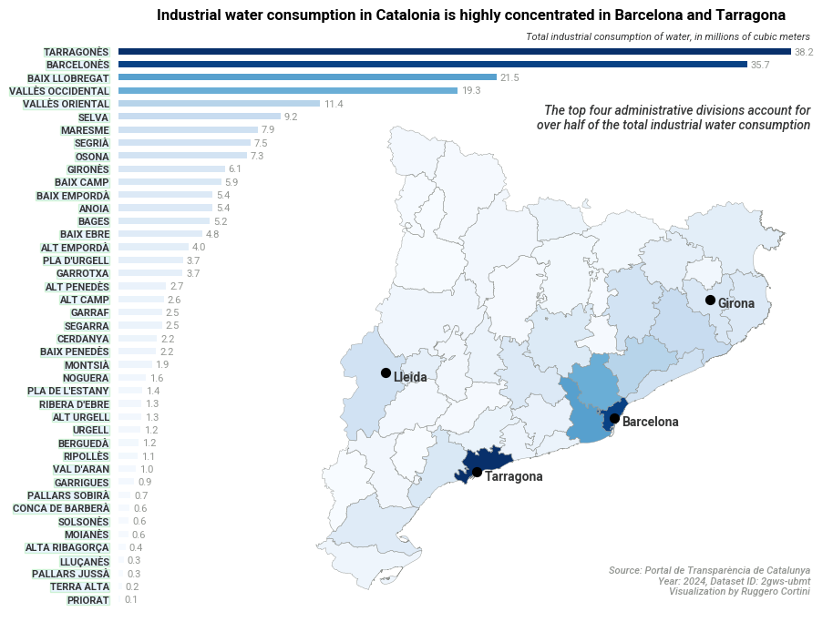

| any | codi_comarca | comarca | poblaci | dom_stic_xarxa | activitats_econ_miques_i | total | consum_dom_stic_per_c_pita | |
|---|---|---|---|---|---|---|---|---|
| 0 | 2024 | 1 | ALT CAMP, L' | 46338 | 1588721 | 2602737 | 4191458 | 93.93 |
| 1 | 2024 | 2 | ALT EMPORDÀ, L' | 148856 | 7532744 | 4005563 | 11538307 | 138.64 |
| 2 | 2024 | 3 | ALT PENEDÈS, L' | 114215 | 4217395 | 2723893 | 6941288 | 101.16 |
| 3 | 2024 | 4 | ALT URGELL, L' | 21214 | 1007067 | 1299444 | 2306511 | 130.06 |
| 4 | 2024 | 5 | ALTA RIBAGORÇA, L' | 4002 | 466835 | 429561 | 896396 | 319.59 |
Industrial water consumption in Catalonia
data visualization
geospatial
open data
Python
Combining three Catalan open data sources to show how industrial water use is concentrated in the Barcelona and Tarragona comarques.
Catalonia publishes granular water consumption data — by sector and by comarca (the administrative unit below province) — through the Portal de Transparència de Catalunya. Cross-referencing this with geographic boundaries from the Institut Cartogràfic i Geològic de Catalunya makes it possible to map where industrial water use is actually concentrated.
Result
The chart below pairs a ranked bar chart with an inset choropleth map. The colour scale is shared across both panels, making it easy to spot the geographic clusters at a glance.

The concentration is stark: the top four comarques account for over half of total industrial water consumption. Barcelonès and its neighbours dominate, with a secondary cluster around Tarragona driven by the petrochemical complex at the mouth of the Ebre.
Analysis
The notebook below walks through the full pipeline: fetching consumption data from the Socrata API, loading comarca boundaries from a GeoJSON zip, merging the two datasets, and producing the visualisation. It can also be downloaded here.
Catalan Open Data exploration
Data load
Agència Catalana de l’Aigua
The Agència Catalana de l’Aigua has documentation pertaining to the public APIs that allow for retrieving structured data on water in Catalonia.
| Datos | Catálogo | Últimos datos recogidos |
|---|---|---|
| Embalses | https://aplicacions.aca.gencat.cat/sdim2/apirest/catalog?componentType=embassament | https://aplicacions.aca.gencat.cat/sdim2/apirest/data/EMBASSAMENT-EST |
| Aforos | https://aplicacions.aca.gencat.cat/sdim2/apirest/catalog?componentType=aforament | https://aplicacions.aca.gencat.cat/sdim2/apirest/data/AFORAMENT-EST |
| Pluviómetros | https://aplicacions.aca.gencat.cat/sdim2/apirest/catalog?componentType=pluviometre | https://aplicacions.aca.gencat.cat/sdim2/apirest/data/PLUVIOMETREACA-EST |
| Piezómetros | https://aplicacions.aca.gencat.cat/sdim2/apirest/catalog?componentType=piezometre | https://aplicacions.aca.gencat.cat/sdim2/apirest/data/PIEZOMETRE-EST |
Portal de Transparència de Catalunya
Then, there is the water consumption data from the Portal de Transparència de Catalunya.
Institut Cartogràfic i Geològic de Catalunya
The data here was obtained in the ICGC website. It refers to the geographical coordinates of the boundaries between catalan “comarques”.
| CODICOMAR | NOMCOMAR | CAPCOMAR | AREAC5000 | geometry | |
|---|---|---|---|---|---|
| 0 | 01 | Alt Camp | Valls | 537.8597 | MULTIPOLYGON (((1.47594 41.47798, 1.47459 41.4... |
| 1 | 02 | Alt Empordà | Figueres | 1356.9070 | MULTIPOLYGON (((3.22338 42.23682, 3.22337 42.2... |
| 2 | 03 | Alt Penedès | Vilafranca del Penedès | 592.5553 | MULTIPOLYGON (((1.6169 41.5126, 1.61666 41.512... |
| 3 | 04 | Alt Urgell | la Seu d'Urgell | 1446.6785 | MULTIPOLYGON (((1.31941 41.99157, 1.31775 41.9... |
| 4 | 05 | Alta Ribagorça | el Pont de Suert | 427.2234 | MULTIPOLYGON (((0.8795 42.6314, 0.87928 42.631... |
| any | codi_comarca | comarca | poblaci | dom_stic_xarxa | activitats_econ_miques_i | total | consum_dom_stic_per_c_pita | comarca_sane | |
|---|---|---|---|---|---|---|---|---|---|
| 0 | 2024 | 1 | ALT CAMP, L' | 46338 | 1588721 | 2602737 | 4191458 | 93.93 | ALT CAMP |
| 1 | 2024 | 2 | ALT EMPORDÀ, L' | 148856 | 7532744 | 4005563 | 11538307 | 138.64 | ALT EMPORDÀ |
| 2 | 2024 | 3 | ALT PENEDÈS, L' | 114215 | 4217395 | 2723893 | 6941288 | 101.16 | ALT PENEDÈS |
| 3 | 2024 | 4 | ALT URGELL, L' | 21214 | 1007067 | 1299444 | 2306511 | 130.06 | ALT URGELL |
| 4 | 2024 | 5 | ALTA RIBAGORÇA, L' | 4002 | 466835 | 429561 | 896396 | 319.59 | ALTA RIBAGORÇA |
| ... | ... | ... | ... | ... | ... | ... | ... | ... | ... |
| 540 | 2012 | 37 | TERRA ALTA | 12713 | 441824 | 225143 | 666967 | 95.22 | TERRA ALTA |
| 541 | 2012 | 38 | URGELL, L' | 36975 | 1543234 | 1422857 | 2966091 | 114.35 | URGELL |
| 542 | 2012 | 39 | VAL D'ARAN, LA | 10056 | 1112630 | 731409 | 1844038 | 303.13 | VAL D'ARAN |
| 543 | 2012 | 40 | VALLÈS OCCIDENTAL, EL | 898173 | 36611134 | 25651000 | 62262134 | 111.68 | VALLÈS OCCIDENTAL |
| 544 | 2012 | 41 | VALLÈS ORIENTAL, EL | 402632 | 17020094 | 14216816 | 31236910 | 115.81 | VALLÈS ORIENTAL |
545 rows × 9 columns
Data visualizations
Industrial water consumption
comarca_sane
GIRONÈS 0.323280
OSONA 0.354505
SEGRIÀ 0.386755
MARESME 0.420630
SELVA 0.460057
VALLÈS ORIENTAL 0.509066
VALLÈS OCCIDENTAL 0.591534
BAIX LLOBREGAT 0.683549
BARCELONÈS 0.836494
TARRAGONÈS 1.000000
Name: activitats_econ_miques_i, dtype: float64